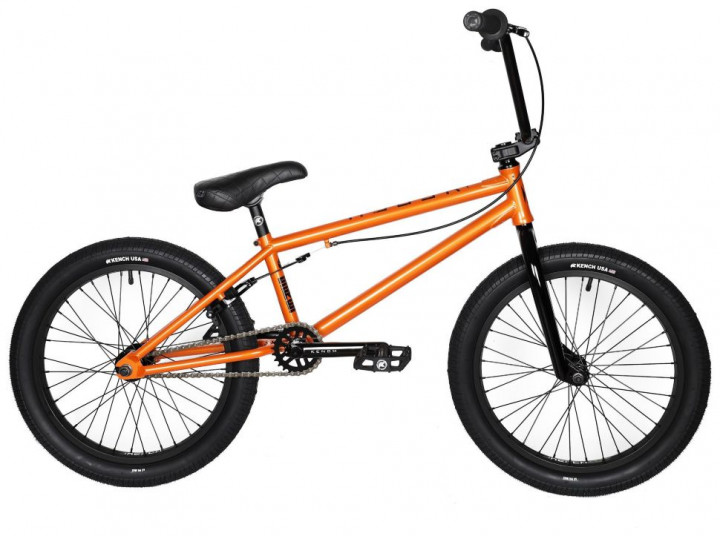

Outleap
ціна 5200₴
КупитиОпис
BMX - один з найпростіших екстремальних велосипедів: є кермо, рама, пара коліс, а що ще потрібно для трюків? Мінімалізм тут неспроста, адже чим більше деталей, тим важче апарат, а вже якщо говорити про обслуговування, тут все стає зрозуміло. Модель Clash відмінно підходить для початківців райдерів.
Stolen
ціна 9800₴
КупитиОпис
Серія Stolen Casino - одна з найбільш продаваних серед велосипедів BMX. Stolen Casino призначений для професійної їзди на велосипеді з доступною ціною. Stolen виробляє цю модель в Тайвані, щоб підтримувати високу якість і доступну ціну. Всі комплектуючі підібрані з метою максимально довгої роботи.
Kink
ціна 13400₴
КупитиОпис
KINK Launch - це ВМХ початкового рівня для початківця райдера! Відмінний дизайн і якісні компоненти зроблять катання ще більш приємним. Вилка зроблена з хромомолібденового сплаву. Матеріал рами Hi-Ten Steel.
Eastern
ціна 9490₴
КупитиОпис
Велосипед Eastern BMX Lowdown 20 "є прекрасним перший байк для тих, хто навчається екстремального катання. Модель поставляється з трикомпонентними шатунами, виконаними з термообробленого хроммолібдена з 8 шліцами, промисловими підшипниками.
Mongoose
ціна 6300₴
КупитиОпис
Яскравий і стильний фрістайл Mongoose Bmx Legion L20 2020 здатний запропонувати все, що може знадобитися новачкам, які бажають прогресувати в трюкових катанні. Байк виконаний з 20-ти дюймовими колесами, які відмінно підійдуть для райдерів підліткового віку.
Kench
ціна 10000₴
КупитиОпис
BMX 20 "KENCH - сучасний, якісний велосипед за доступною ціною для екстремального трюкового катання і виконання різних стрибків, перельотів, переворотів і стрибків. Купити велосипед BMX 20" KENCH необхідно при виборі простого, зручного транспортного засобу з підвищеною міцністю.